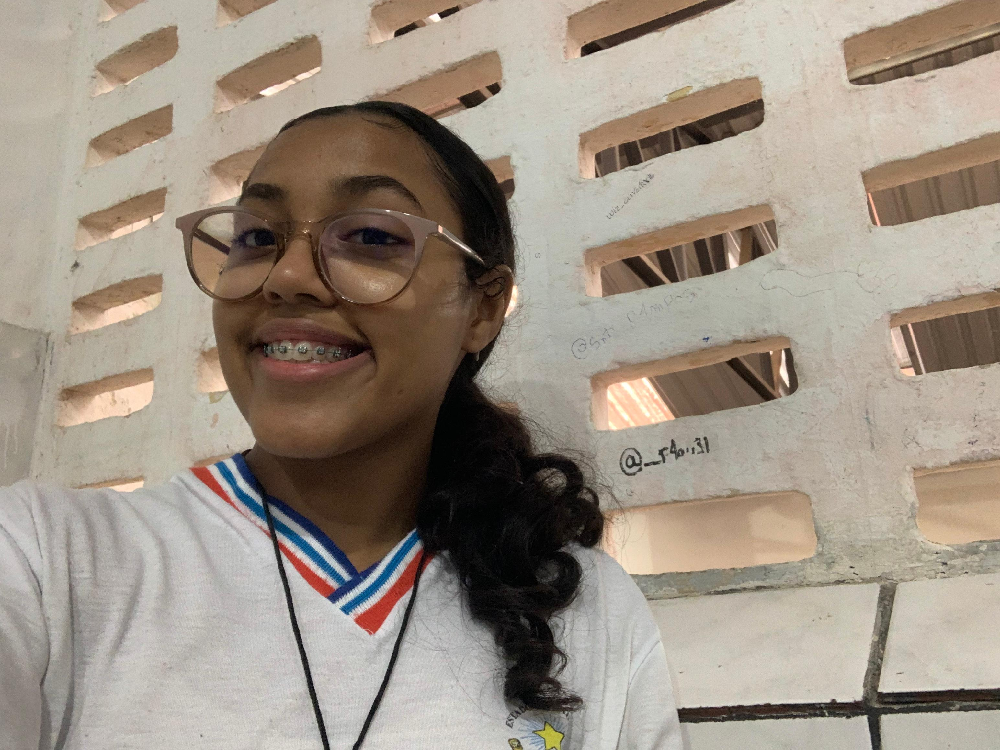

Nossa Equipe

Presidente
Responsável por liderar o Grêmio Estudantil e representar os alunos perante a direção da escola.

Vice-Presidente
Auxilia o presidente na liderança do Grêmio Estudantil e o substitui em suas ausências.
Coordenadora Geral e Tesoureira
Responsável pela organização geral do Grêmio Estudantil e pela gestão financeira.

Coordenadora de Comunicação
Responsável pela comunicação do Grêmio Estudantil com os alunos e pela divulgação das atividades.
Coordenadora de Cultura e Esportes
Responsável pela organização de eventos culturais e esportivos.

Coordenadora de Assuntos Acadêmicos
Responsável por representar os alunos em questões acadêmicas e buscar melhorias para o ensino.